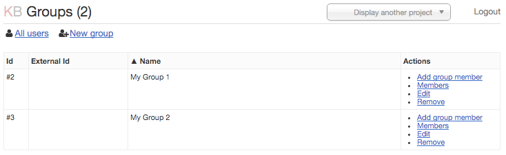

Управление группами¶
В Канборде каждый пользователь может быть членом одной или нескольких групп. Группа - это что-то вроде команды или организации.
Только администраторы могут создавать новую группу и добавлять туда пользователей.
Настройка групп доступна через Управление пользователями (выпадающее меню справа вверху) -> Просмотр всех пользователей. Здесь вы можете создавать новые группы и добавлять пользователей в группы.

Рисунок. Управление группами.
Менеджеры проектов могут предоставлять доступ группам к проектам на странице Разрешения проекта.
Внешние id в основном используются для предоставления доступа внешним группам. Канборд поддерживает группы из LDAP посредством автоматической синхронизации групп из LDAP сервера.